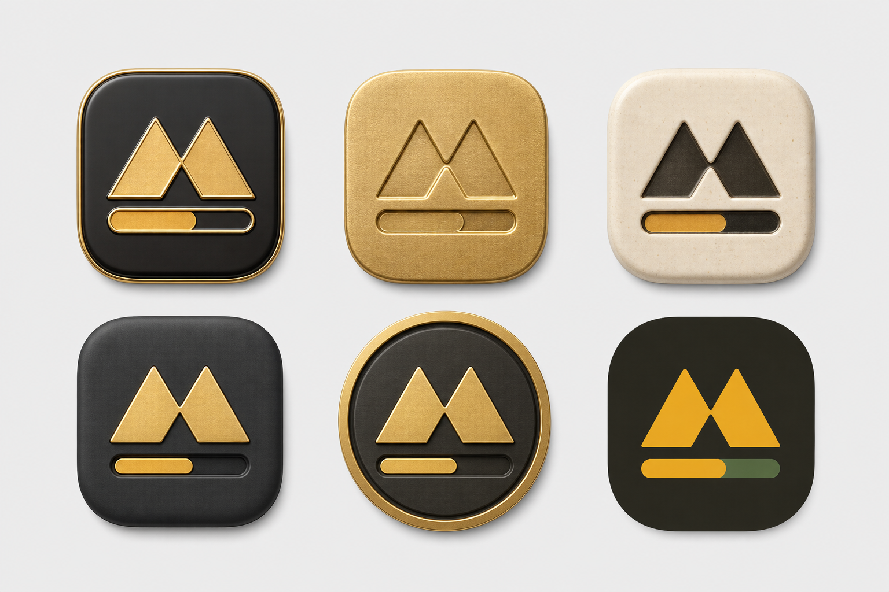

缩小识别
72
48
32
24
20
16
上一版的不对称不是设计意图，而是造型失误。这一版不要求你补提示词：我把品牌母版与应用图标拆开，母版只解决比例、对称和识别；珐琅、压铸金属与陶瓷只作为图标表面语言。
同一条路径同时包含外轮廓和负形进度槽。中心凹口、双峰、两侧肩线和槽位全部围绕中轴镜像。
双峰来自两个等价的增长阶段，中间的内凹把视线带回产品核心：工作时间被折算为可见进度。
底部槽位直接从主体中挖出，不额外贴一根进度条。这样图形在单色、压印和金属冲压场景里仍然成立。
16–24px 会缩短槽位、放宽中心凹口并减少曲线采样，避免机械缩放造成糊边；几何身份保持不变。
下方是同一视觉母题的材质探索。生成图只负责判断表面气质；确认方向后会按上面的对称母版重新绘制，不直接拿生成图当最终资产。
与浅色主题最一致。细砂金表面、内压轮廓和克制倒角带来实体感，适合作为主应用图标。
更轻、更生活化，和纸面界面自然融合；但品牌色占比下降，任务栏里不如暖金醒目。
层次沉稳、适合深色模式，但会回到你所说的“更像深色方案”，不建议作为 F2 主方向。
保留细砂金属、内压轮廓与克制倒角，把整块金色拆成主表面、标记和进度强调三层。四版造型完全一致，只比较颜色关系。
暖白珐琅承接浅色界面，深咖负责识别，金色只保留在进度上。温暖但不单调。
仍然保留金属主表面，但降低黄色饱和度，以石墨灰稳定整体。更偏专业工具。
呼应工作状态绿色，气质最柔和；但与当前金币黄入口的品牌连续性较弱。
深色模式表现最好，鼠尾草绿进度更克制；作为深色专用图标比主图标更合适。
锁定暖白、深咖和低饱和金色，只比较金属包边、压印深度与表面分层。你圈出的黑金边缘和圆章精密度已融入，但轮廓继续保持圆角方形。

它用于回答“质感应该长什么样”，不负责精确几何、颜色交付或小尺寸渲染。最终 SVG、PNG、ICO 和托盘图标都会从对称母版单独输出，并接受像素级校正。
应用图标允许有材质；标题栏与托盘只使用干净母版。两者共享轮廓，不强迫一个复杂图标覆盖所有尺寸。
一是对称母版的轮廓是否成立；二是应用图标采用哪种材质。确认后才会绘制生产资产并替换应用图标。